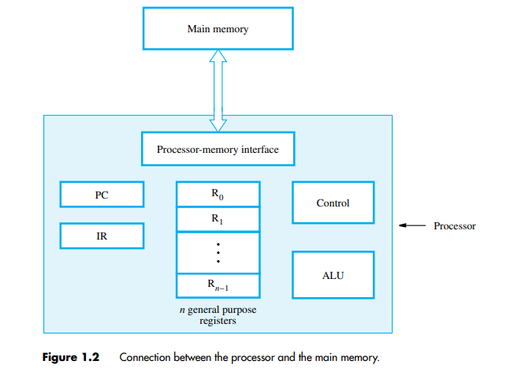

A computer consists of five functionally independent main parts:
We refer arithmetic and logic circuits, in conjunction with the main control circuits, as the processor. Input and output equipment is often collectively referred to as the input-output (I/O) unit. It is convenient to categorize this information as either instructions or data. A program is a list of instructions which performs a task. Data are numbers and characters that are used as operands by the instructions. These are stored in memory.
The function of the memory unit is to store programs and data. There are two classes of storage, called primary and secondary.
Also called main memory, it is a fast memory that operates at electronic speeds. Programs must be stored in this memory while they are being executed. The memory consists of a large number of semiconductor storage cells, each capable of storing one bit of information. These cells are rarely read or written individually. Instead, they are handled in groups of fixed size called "words". The memory is organized so that one word can be stored or retrieved in one basic operation.
A memory in which any location can be accessed in a short and fixed amount of time after specifying its address is called a random-access memory (RAM).
When the execution of an instruction requires data located in the main memory, the data are fetched and copies are also placed in the cache. If instructions or data locations are accessed repeatedly while copies of their contents are available in the cache, they can be fetched quickly.
Although primary memory is essential, it tends to be expensive and does not retain information when power is turned off. Thus additional, less expensive, permanent secondary storage is used when large amounts of data and many programs have to be stored, particularly for information that is accessed infrequently. Access times for secondary storage are longer than for primary memory. A wide selection of secondary storage devices is available, including magnetic disks, optical disks (DVD and CD), and flash memory devices.
Most computer operations are executed in the arithmetic and logic unit (ALU) of the processor. Any arithmetic or logic operation, such as addition, subtraction, multiplication, division, or comparison of numbers, is initiated by bringing the required operands into the processor, where the operation is performed by the ALU. When operands are brought into the processor, they are stored in high-speed storage elements called registers. Each register can store one word of data. Access times to registers are even shorter than access times to the cache unit on the processor chip.
The memory, arithmetic and logic, and I/O units store and process information and perform input and output operations. The operation of these units must be coordinated in some way. This is the responsibility of the control unit.
Below shows how the memory and the processor can be connected:
In addition to the ALU and the control circuitry, the processor contains a number of registers used for several different purposes.
The processor-memory interface is a circuit which manages the transfer of data between the main memory and the processor. If a word is to be read from the memory, the interface sends the address of that word to the memory along with a Read control signal. The interface waits for the word to be retrieved, then transfers it to the appropriate processor register. If a word is to be written into memory, the interface transfers both the address and the word to the memory along with a Write control signal
A program must be in the main memory in order for it to be executed. Execution of the program begins when the PC is set to point to the first instruction of the program.
The contents of the PC are transferred to the memory along with a Read control signal. When the addressed word has been fetched from the memory, it is loaded into register IR. At this point, the instruction is ready to be interpreted and executed.